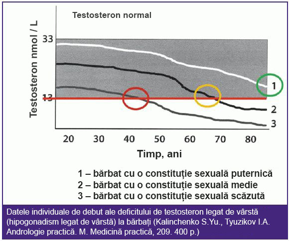

O femeie urolog a spus cum reușește să restabilească potența la bărbații cu vârsta cuprinsă între 60 și 70 de ani.
Un medic al Institutului de Urologie - Margareta Antonescu poate șterge nasul chiar și profesorilor celebri din toată țara. Această femeie a ajutat mii de bărbați anual pentru restabilirea eficientă a potenței cu ajutorul unui remediu de clasa premium. Mai ales eficient doctorul ajută la refacerea potenței care a dispărut la bărbaţi cu vârsta după 50 de ani.
Corespondentul nostru a reușit să intervieveze cea mai bună urolog de la Institutul de Urologie - Margareta Antonescu.
Margareta Antonescu - femeie urolog, doctor categorie superioară, profesor asociat la Departamentul de Urologie UE, a vorbit despre tratamentul modern al impotenței.- Doamna Margareta, Dvs. vă sunt mulțumiți mulți bărbați între 50 și 70 de ani pentru sfaturile și ajutorul acordat. Este într-adevăr atât de necesar să facem sex la această vârstă?
- Sigur că da! Mai ales pentru bărbați. Sănătatea depinde direct de asta și de cât de repede va veni bătrânețea.
Sunt întotdeauna sincer surprinsă de acei bărbați care au prostatită sau adenom și de răspunsul la întrebarea „Când a fost ultima dată când ați făcut sex?”, Ei zâmbesc și răspund: "Doctore, ce sex? Nu am mai făcut asta de șapte ani". Tocmai din această cauză și apare prostatita. Și dacă continuați să nu faceți sex, atunci va exista și cancer de prostată.
Absența sexului este extrem de dăunător atât la 30, cât și la 40, și la 50 și la 70 de ani! Prostata este organul în care se formează ejacularea. Trebuie să eliberată și reînnoită mereu. Dacă nu se face aceasta, începe să se dezvolte prostatita. În prostată apar fenomene congestive patologice (acumulări de microorganisme periculoase). Acestea duc la inflamația prostatei (prostatită). Glanda prostatică inflamată pentru o lungă perioadă de timp duce la un adenom de prostată, cu urinări frecvente și dificultăți la urinare. Următoarea etapă după adenom este cancerul de prostată. La cei care au probleme cu potența, cancerul de prostată apare de 7 ori mai des decât la bărbații sănătoși.
Și aceasta este doar una dintre consecințele periculoase. Iar ele sunt multe. Dar de ce este atât de periculos ignorarea acestor consecinţe?! Deoarece întregul corp uman este conceput pentru a reproduce descendenții. Și când această funcție se estompează, corpul începe să îmbătrânească rapid. Vasele de sânge devin mai subțiri și se sparg, riscul de a apărea un atac de cord și un accident vascular cerebral crește și apar tulburări ale sistemului psihosomatic. Bărbatul rapid încărunțește (dacă nu a încărunțit până acum). Apar dureri de articulații, se îndoaie postura. Chiar și insomnia, care îi chinuie pe oameni cu vârsta, este asociată cu lipsa de sex și lipsa de producție a unui număr de hormoni.
Vreau să arăt câteva fotografii cu ceea ce se întâmplă cu sistemul urogenital și cu alte organe interne ale unui bărbat atunci când încetează să facă sex.
Așa arată inflamația prostatei din cauza stagnării în ele (în absența golirii testiculare, sau care nu se face la timp). Inflamația prelungită duce mai întâi la un adenom, apoi la cancer de prostată. În absența sexului, acest lucru se întâmplă întotdeauna, de aceea adenomul de prostată este considerată o boală a bătrânilor.

Din cauza congestiei în vase apar depozite de colesterol, care pot forma cheaguri de sânge. Un cheag de sânge este o probabilitate ridicată de atac de cord sau accident vascular cerebral. A fost un atac de cord care a ucis bărbatul a cărui inimă puteți vedea în fotografie.
Încă mai credeți că sexul nu trebuie făcut? Și oportunitatea de a face sex este stabilitatea în relații. Din păcate, cazuri în care bărbații după problemele cu potența rămân singuri sunt prea multe. Femeile pot face sex până la 70-80 de ani. Și ele au nevoie de asta. În general, regula este următoarea: cu cât soții fac sex des, cu atât trăiesc mai mult.
- Se spune că cunoașteți un remediu unic pentru a restabili potența, care este capabil să returneze plăcerea sexului bărbaților la orice vârstă. Este adevărat?
- Clinica noastră a fost întotdeauna renumită pentru procentul ridicat de recuperare pentru o varietate de boli. Întrucât suntem principalul Institut al țării în domeniul urologiei, folosim cu adevărat deseori mijloace unice. Dacă vorbim despre sfera sexuală a bărbaților, atunci da, avem un produs special care îl prescriem pacienților noștri - se numește "Potencialex".
"Potencialex" nu numai că îmbunătățește potența (erecția fermă și de durată) în urmă la administrarea unei cure recomandate, care se stabilește fără de a mai sta în rânduri aglomerate la cabinet ca să urmați un control medical - este necesar doar să comunicați la telefon simptomele prezente care âl va ajuta pe specialist să stabilească modalitatea de administrare și termenul curei, și prin administrarea acesteia Potencialex restabilește potența naturală. Acest produs nu este nicăieri altundeva și nu este vândut în farmacii.
- Puteţi să ne spuneţi mai multe despre eficacitatea acestui remediu și unde îl putem comanda?
- Remediul a demonstrat niște rezultate excepționale. Acest lucru este demonstrat cât prin cercetările clinice efectuate dea lungul anilor, atât și prin rezultatele demonstrate în urmă la administrarea de către clienții noștri care prezintă un randament al eficacității nu mai puțin de 99,94%. În același timp, noi nu facem nimic atât de special – pur și simplu stabilim gradul de gravitate a problemei și vă indicăm cantitatea necesară de acest remediu, pentru aceasta accesați acest link.
Dacă vorbim despre eficacitatea lui "Potencialex", atunci vreau să arăt rezultatele studiilor sale clinice, efectuate în perioada -. În total, au participat aproximativ 4000 de bărbați cu vârsta între 50 - 85 de ani. Mulți dintre subiecți nu au avut potență de mai mulți ani.
Rezultatele studiului:
- Recuperarea potenței – a existat o oportunitate de a face sex cel puțin o dată pe săptămână) - 98,6% dintre subiecți
- Creșterea nivelului de testosteron - 97,9% dintre subiecți
- Creșterea libidoului (dorința sexuală) – 99,3% dintre subiecți
- Îmbunătățirea bunăstării generale - 99,8% dintre subiecți
- Lipsa efectelor secundare - 100% subiecți
Adică este într-adevăr un remediu foarte bun.
Un remediu inovator cu o eficacitate maxim posibilă asupra sistemului urogenital la bărbați.
Am decis să aflăm detaliile acțiunii lui "Potencialex" asupra sistemului urogenital al unui bărbat, de la unul dintre medici specialiști - Doctor onorat al României, profesor, urolog șef la Spitalul Universitar de Urgenţă Militar Central "Dr. Carol Davila" Vasile Titus Mihai.
„Nu înțeleg deloc acei bărbați care, la vârsta de 50-60 de ani, își apleacă capul și decid că nu se poate face nimic în acest sens și își pun capăt vieții sexuale. De ce?! Când vă puteți distra până la vârsta înaintată!»- Domnule Vasile, prin ce mod "Potencialex" ajută în lupta atât de eficientă împotriva disfuncției erectile la 50-70 de ani? Care este mecanismul său de acțiune?
Principalul motiv pentru o potență proastă este lipsa de testosteron. Această problemă și o înlătură "Potencialex".
Testosteronul este, de fapt, hormonul masculin de excitare. Cu cât este mai mare, cu atât omul dorește mai mult femeile și cu atât mai puternică este potența lui. Vârful producerii de testosteron este 18-22 ani. Apoi, producerea începe să scadă treptat. În consecință, atunci când nivelul testosteronului devine scăzut, potența dispare și începe să îmbătrânească corpul.
 Scăderea nivelului de testosteron apare la toți bărbații - la cineva mai rapid, la cineva mai lent. La nivelul testosteronului, mai puțin de 13 nmol/l, potența dispare complet.
Pe lângă vârsta înaintată, producerea de testosteron este influențată de alți factori externi – obiceiuri proaste, alimentație nesănătoasă, ecologie dăunătoare (de exemplu, dacă persoana lucrează la o sală de producere dăunătoare, toxică etc.) și multe altele.
Toate acestea conduc la o accelerare a scăderii nivelului de testosteron și, în consecință, la apariția impotenței.
Verificați cât de tare s-a redus producerea de testosteron prin următoarele simptome:
- Lipsa constantă de putere
- Slăbiciune musculară
- Frecvente dureri de cap
- Probleme de stomac
- Dorință constantă de somn
- Lipsa dorinței sexuale
- Încetinirea reacției
- Tulburări de memorie
- Supratensiuni de presiune
- Slăbirea mușchilor și a pielii
- Apatie și iritabilitate
- Căderea părului
- Probleme frecvente de sănătate
Având cel puțin 2 dintre aceste simptome sugerează că nivelul de testosteron este scăzut. Trebuie restabilit. Atunci și potența va fi restabilită.
"Potencialex" restabilește perfect producerea testosteronului. Acesta acționează direct asupra celulelor Leydig din testicule la bărbați, ceea ce duce la normalizarea funcționării lor și le reântinerește cu 20-30 de ani. Ca urmare, potența este restabilită, iar corpul însuși devine mult mai tânăr.
Așa cum am spus, mulți dintre cei care nu au crezut că vor putea vreodată să facă sex, le-am dovedit aceasta după o cură de 2-3 luni de administrare regulată a "Potencialex". Trebuie luat zilnic până la finele cursului. În același timp, primele îmbunătățiri sunt vizibile în 3-4 săptămâni. Produsul nu numai că restabilește potența, ci și acționează pozitiv asupra întregului corp al unui bărbat, deoarece testosteronul este principalul hormon masculin.
Faceţi o reducere pentru acest produs, nu?
Exact. Toți bărbații care doresc să restabilească potența au șansa la o reducere. Acum, în stoc avem aproximativ 1000 de pachete la un preț promoțional, noi (eu și subordonații mei) vom trimite produsul în cantitățile necesare celor care vor face comanda aici.
"Potencialex" este complet natural - conține extracte puternic concentrate din cele mai utile plante pentru bărbați, aduse din întreaga lume. Noutatea bună este că poate fi luat fără prescrierea unui medic, ci doar printr-o discuție la telefon la domiciliu.
Spre deosebire de Viagra sau alte produse, "Potencialex" restabilește dorința sexuală și potența naturală – adică, cele care apar în urmă la un proces biologic de recuperare, adică singure fără a utiliza agenți stimulatori.
Ce este necesar pentru a comanda "Potencialex" la promoție?
- 1. Participați la tombolă.
- 2. Completați cererea indicând Numele și Prenumele dv.
- 3. Așteptați apelul specialistului, la care îi veți discuta problema în detalii și care va stabili cura și modalitatea de administrare.
- 4. După 3-7 zile (termenul de livrare), primiți produsul la adresa menționată.
"Potencialex" ajută cu adevărat la restabilirea potenței la bătrânețe? Rezultatele sondajului.
Site-ul Institutului de Urologie desfășoară în prezent un sondaj în rândul celor care au folosit "Potencialex".
Singura întrebare este: „Potencialex v-a ajutat să vă restabiliți puterea masculină NATURAL?”
Rezultatele sondajului:
Comentarii
Viorel Vladi
Am câștigat o reducere pentru "Potencialex". Mulțumesc foarte mult. Am luat o cură pentru 2 luni și jumătate. Mi-au promis că va ajunge în cinci zile.
Mihail Z.
De asemenea, am participat și am câștigat o reducere. De un an nu pot face asta, dar nu vreau să mă opresc. Sper că "Potencialex" va ajuta. Viagra nu pot lua din cauza contraindicațiilor - cu inima este rău.
Mirel Curpea
Confirm pe deplin. "Potencialex" este un produs excelent. Am 54 de ani. Recent, potența m-a lepădat. Apărea foarte rar. Am încercat o mulțime de lucruri pentru a o restabili. Rețete populare, tablete, am mers la urologi în mod repetat. Singurul lucru care ma ajutat este acest produs. Îl luasem dar nu era la promoție și era mai scump, luasem chiar 6 cutii, ma costat mult dar sexul este stabil acum. În plus, sănătatea s-a îmbunătățit, deoarece testosteronul este benefic pentru organismul masculin.
Simion
De asemenea, am simțit cum am devenit tânăr după ce am trecut cursul de 2 luni cu "Potencialex".
Maxim Pindea
Am comandat cât mai este în stoc. Niciodată nu am comandat nimic pe internet, dar sa dovedit a fi ușor. Tot ce trebuie să faceți este să vă lăsați numărul de telefon și nume/prenume. Și specialistul însuși a sunat și mi-a adresat câteva întrebări, a zis ca am nevoie de 4 cutii pentru restabilire, apoi am indicat la ce adresă să livreze.
Lucian Muntean
Am citit detalii despre "Potencialex". Impresionant! Particip! Pentru pensionarii de sex masculin, un remediu foarte util. Testosteronul este o protecție împotriva vârstei înaintate.
Elena
Trebuie să-l încercăm și noi, poate vom avea noroc la tombolă. Soțul are 48 de ani, potența nu mai este. Am doar 41 de ani și vreau să fac sex.
Petru Begu
Vecinul are 65 de ani. Face sex stabil (se aude foarte bine). De asemenea, utilizează acest remediu. I-am văzut ambalajul.
Lilian Vion Petrescu
Am comandat cu reducere, aștept comanda...domnul care ma contactat (doctor pare mi se) a zis că cursul pentru profilactică și perfectare va dura o lună și jumătate.
Aurel V.
Acest lucru este cu adevărat ceva ... beau doar o lună și o săptămână și sexual mă simt deja cu 10 ani mai tânăr. Înainte de asta, mi-a ajutat doar Viagra, dar este foarte dăunătoare și medicul mia interzis Viagra. Recomand acest produs tuturor, Potencialex!
Oleg G.
Am 61 de ani, potența nu a fost aproape 5 ani. M-am dus la urolog (pentru o altă problemă). Apoi, printre altele, prietenul mi-a sfătuit să beau cursul "Potencialex" pentru a îmbunătăți bunăstarea generală. După un curs de 3 luni, am simțit atracția sexuală. Acum e bine, potența și dorința apare. Uneori facem sex chiar 2-3 pe săptămână. Mă simt mai bine.
Ion Burtă
Ieri curierul mi-a adus coletul. Într-adevăr sa dovedit a fi totul cinstit.
Constantin Lupoiu
Spuneți la revedere disfuncției erectile doar peste 4 săptămâni, iar dacă doriți niște senzații mai tari atunci mai luați-l încă 4 săptămâni și o să vă simțiți ca la 25 de ani. Vă sfătuiesc pe toți. Singurul mijloc care ajută cu adevărat. Am 59 de ani.
Vladlen J.
Am câștigat o reducere. Doamna a spus că au mai rămas peste 200 de pachete. Bine că am reușit.
Lăsați un comentariu